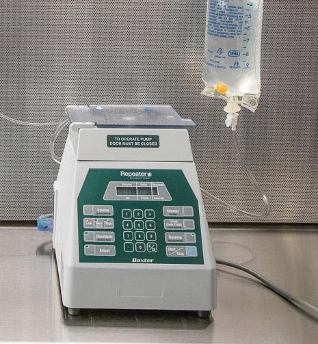
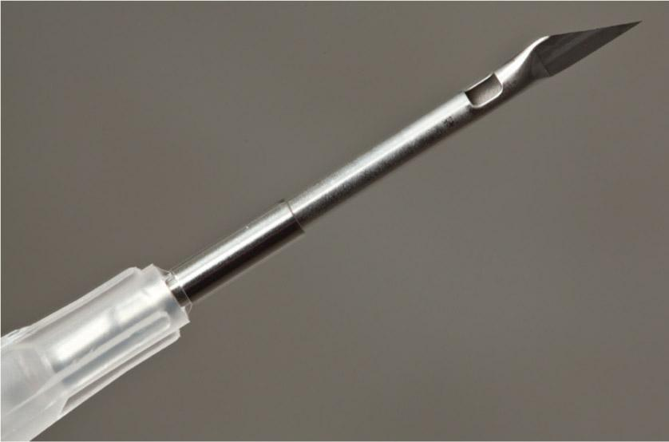
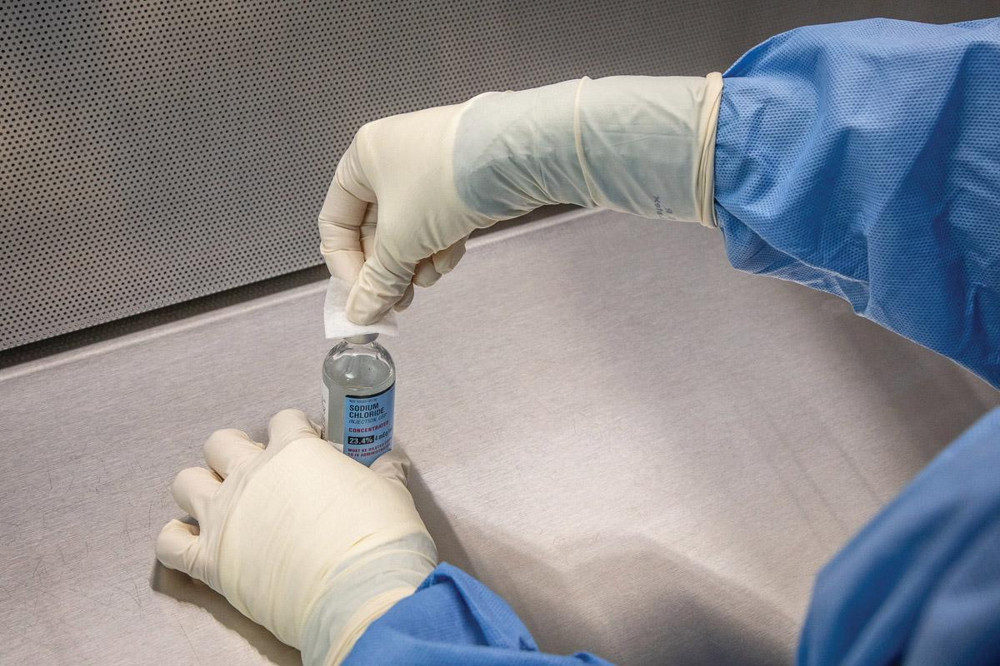

PART 2: TRAINING
Before performing this lab, preview the accompanying Chapter 11 Procedural Lab Competency Assessment Checklist in Appendix B.
11.5 Understand the Resources and Supplies
USP <797> prescribes a number of special requirements for the preparation of SVP products. This chapter and the corresponding lab provide resources and supplies that are in alignment these standards.
Essential Supplies
Most sterile compounding procedures require the same essential supply items to be available for use in both an anteroom and a buffer room. For the anteroom, these supplies include foot and head garb that consists of low-lint shoe covers; low-lint head covers and (if needed) facial hair covers; disposable face masks; and reusable goggles when eye protection is needed. Hand hygiene supplies include soap in a nonrefillable container; disposable nail cleaners; low-lint, disposable towels or wipers; an alcohol-based hand rub; and sterile 70% isopropyl alcohol (IPA). Other garbing supplies include low-lint garments (gowns or coveralls) with sleeves that fit snugly around the wrists and that are enclosed at the neck and sterile, powder-free, disposable gloves.
For the buffer room, supplies include low-lint wipers, agents required for cleaning and disinfecting the primary engineering control (PEC), and waste containers. Sterile 70% IPA is needed to wipe sterile gloves and surfaces. A pen is needed for marking vials and may be needed for paper documentation. Depending on a facility’s SOPs, sterile compounding personnel may apply an alcohol-based hand rub and don sterile gloves in the buffer room, instead of the anteroom. If so, these essential supply items must be available for use in the buffer room. Facilities may also choose to use carts or tables to hold supply items.
Procedure-Specific Supplies
In addition to the previously listed essential supplies, each sterile compounding procedure requires supply items specific to the procedure being performed. The type, number, and amount of procedure-specific supply items are determined by personnel prior to performing the procedure, based on information provided on the CSP label and the medication additive label. After reading these labels, personnel perform one or more calculations that identify the number and volume of additives needed to prepare the CSP. This information, in turn, dictates the number, size, and type of syringes needed for the procedure. Most sterile compounding procedures require the use of a medication vial, an IV bag or other dispensing device, syringes, needles, and sterile 70% IPA swabs. If appropriate, sterile compounding personnel should obtain tamper-evident, sterile, adhesive seals. This type of seal is applied to the injection port of an IV bag or across the needle cap of a syringe as a safety measure.
IVPB Supplies
The process of compounding IVPB preparations in this procedural lab involves the manipulation of vials, vented needles and regular needles, and IVPB base solutions. Familiarity with the appearance of these items as well as any specific handling requirements is essential to sterile compounding procedures.
Vials
Some IVPB compounding procedures require sterile compounding personnel to reconstitute a powdered antibiotic or other drug within a vial. To do so, personnel draw up diluent (such as sterile water for injection [SWFI] or NS) from a vial and inject that fluid into the drug vial. There are several methods that may be used to complete this procedure, including the use of the milking technique, or the use of a vented needle, or specialized equipment called a repeater pump. Each of these reconstitution methods involves techniques or equipment that reconstitute the powder while simultaneously equalizing the air pressure within the vial.
Facilities that prepare multiple, large batches of IVPB medications sometimes use a repeater pump for drug reconstitution. This pump allows for the rapid reconstitution of multiple vials of powdered medication using a single bag or syringe filled with diluent. (For more information on repeater pumps, refer to Chapter 5 of this textbook.)

Sterile compounding personnel must take several precautions during the reconstitution process. In addition to proper needle insertion technique to avoid coring a vial stopper, personnel must exercise care when relieving the air pressure within a diluent vial prior to withdrawing fluid from the vial. Using the milking technique helps to equalize the pressure within the vial, allowing an easy withdrawal of fluid. (For assistance in understanding or performing the milking technique for fluid withdrawal, refer to Chapter 10 of this textbook.)
Sterile compounding personnel may also use the milking technique to relieve the air pressure within a vial when reconstituting a powdered drug. This air pressure is created when a liquid diluent is injected into a vial of powder. Once personnel inject the diluent into the vial, they remove the needle-and-syringe unit and discard it. They then use a new needle-and-syringe unit to withdraw the required volume from the vial after the powder has dissolved. In some facilities, it may be acceptable to allow the needle-and-syringe unit used to inject the diluent to remain inserted in the vial until the powder is completely dissolved. At that time, the liquid within the vial can be withdrawn into the attached syringe. Because positive pressure was created within the vial when the diluent was injected, the milking technique can be used to withdraw the solution from the vial without injecting air. This method is best used when the entire contents of a vial are drawn into the syringe.
Sterile compounding personnel should be vigilant when using the milking technique during the reconstitution of a powdered medication. Because of the potentially lengthy procedure involved in dissolving the powder and drawing up the solution into a syringe, there is a heightened risk of touch contamination and shadowing of the critical sites of the vial and needle-and-syringe unit.
Workplace Wisdom
It is common practice for experienced sterile compounding personnel to leave the needle-and-syringe unit inserted in the vial while the powder dissolves and then use the described milking technique to relieve positive pressure while drawing up the fluid in the vial. When using this technique, it is essential to avoid touch contamination and shadowing of the critical sites of the needle-syringe-vial unit while waiting for the diluent to dissolve the powdered drug in the vial.
Due to the potential for contamination during the often lengthy process of drug dissolution, some facilities’ SOPs dictate that personnel not leave the needle-and-syringe unit attached to the vial while the powdered drug dissolves. In this scenario, sterile compounding personnel inject the diluent into the powdered drug vial and then position the tip of the needle in the vial’s neck where there is neither fluid nor powder but where excess air pressure has accumulated. With the needle situated in the vial’s neck, personnel then remove positive pressure from the vial by pulling back on the flat knob of the plunger of the syringe, thus drawing the air pressure from the vial into the empty syringe. The empty needle-and-syringe unit is then removed from the vial and discarded appropriately. Once the diluted powder has completely dissolved, a new, sterile needle-and-syringe unit is used to draw up the desired amount of drug.
Vented Needles
In addition to regular needles, some IVPB sterile compounding situations require personnel to use a vented needle. Unlike a regular needle that has a beveled tip, some vented needles have a razor tip and are surrounded by a tiny aluminum needle sheath. When the sheath is properly situated in the vial stopper, air is vented out of the vial through the movable metal band on the needle. This unique design allows the injection of the diluent into the vial while simultaneously venting air from the vial. The design of the needle prevents the withdrawal of fluid into the syringe, as well as the injection of fluid into an IV or IVPB bag.

This type of needle is used solely to reconstitute a powdered medication within a vial or to add liquid to a vial. To perform the reconstitution, sterile compounding personnel must first draw up the diluent into a syringe using a regular needle and then remove the regular needle and attach a vented needle to the syringe. Lastly, personnel insert the vented needle directly into the vial stopper without any angle or bend to the needle.
IVPB Base Solutions
An IVPB base solution bag is typically D5W or NS, with a volume of either 50 mL, 100 mL, or 250 mL, depending on the ordered medication. Unlike an LVP bag, an IVPB base solution bag is only available with a tail injection port. Button injection ports are not used on IVPB bags due to their small size and the potential for puncturing the back of the bag during injection of the medication. When handling an IVPB bag, sterile compounding personnel should insert the needle straight into the injection port without regard to the position of the needle bevel.
Critical Sites of Essential Supplies and IVPB Supplies
Sterile compounding personnel must recall the critical sites of the supplies. Identifying the critical site of each supply item determines the proper procedure for handling the supply item in the buffer room and within a PEC.
The critical sites of the IVPB supplies include the needle, syringe tip, and the piston plunger and inner plunger shaft of the syringe. These items are supplied from their manufacturers in a sterile form, so the critical sites must not be swabbed with sterile 70% IPA prior to use. In addition to these supplies, the Chapter 11 Procedural Lab provides instruction regarding the proper use of a vented needle, a sterile supply item that should also never be swabbed with sterile 70% IPA.
The critical sites of the other SVP supplies used for the procedural lab include the injection port of the IVPB base solution bag and the vial stopper. These critical sites must be swabbed with sterile 70% IPA prior to needle insertion.
After identifying the critical sites of all supply items, sterile compounding personnel must exercise care not to contaminate the critical site of any of the supply items through touch contamination, shadowing, or incorrect placement of the item within a PEC.
